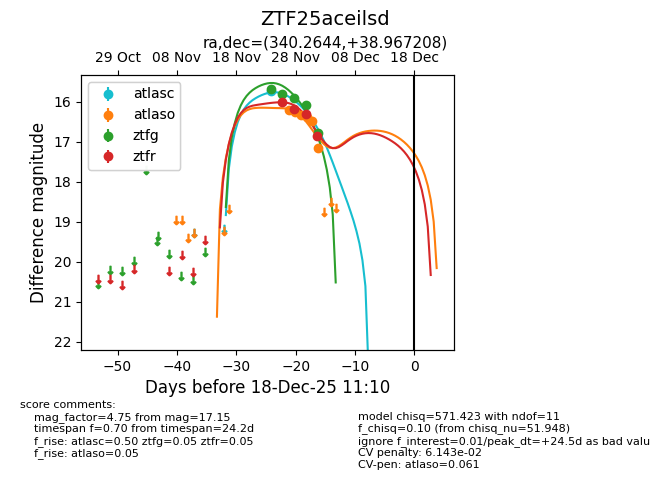
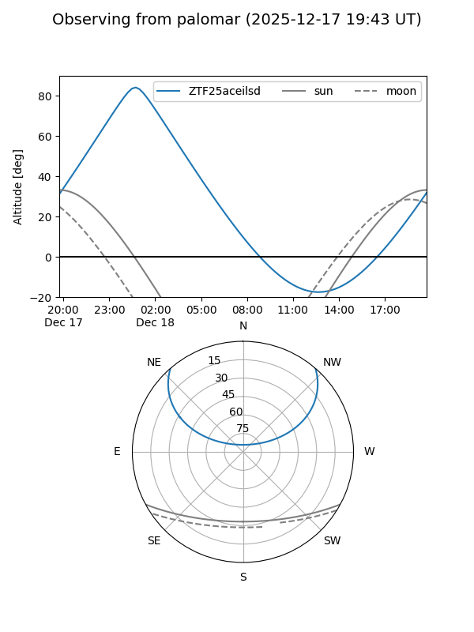
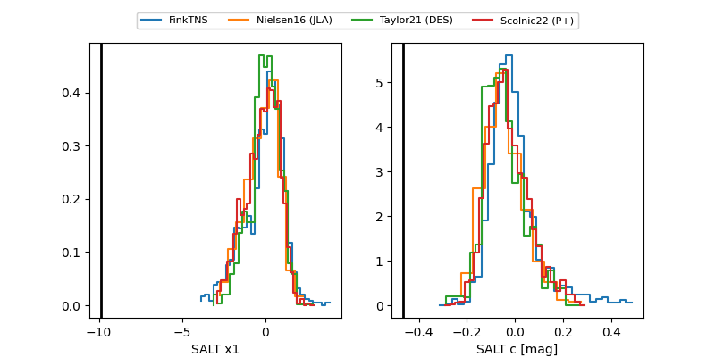

ZTF25aceilsd
Target ZTF25aceilsd at 2025-12-18 11:17
Aliases and brokers:
FINK: fink-portal.org/ZTF25aceilsd
Lasair: lasair-ztf.lsst.ac.uk/objects/ZTF25aceilsd
ALeRCE: alerce.online/object/ZTF25aceilsd
alt names
ZTF25aceilsd (ztf,fink_ztf)
Coordinates:
equatorial (ra, dec) = 340.2644,+38.96721
equatorial (HMS+DMS) = 22:41:03.45,+38:58:01.95
galactic (l, b) = (96.9222,-17.23115)
Photometry
last atlasc=15.74, atlaso=17.15, ztfg=16.79, ztfr=16.87
1 atlasc, 6 atlaso, 5 ztfg, 4 ztfr detections
Lightcurve

Visibility


Additional plots
